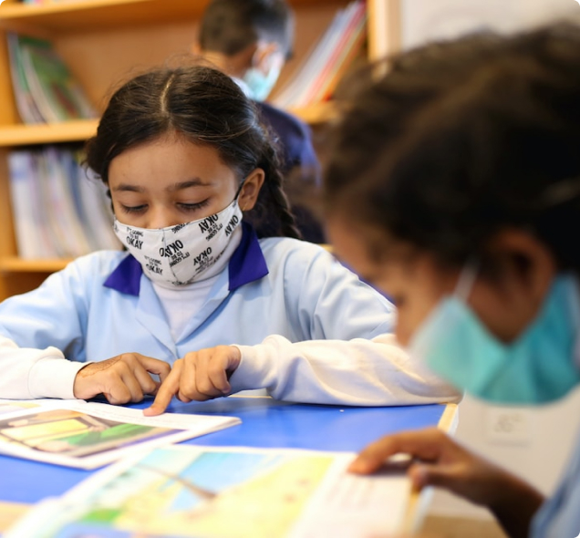

O’zbek
O’zbek Kirish
KirishMaktabgacha ta’lim
Maktabgacha ta’lim fakulteti - maktabgacha yoshdagi bolalar to'liq rivojlanishi uchun javobgar, yuqori psixologik va pedagogik ta'limga ega mutaxassislarni tayyorlaydi. Ushbu yo’nalishda talabalarni malakali pedagog sifatida rivojlantirish, kasbiy bilim va amaliy ko'nikmalarni egallashi uchun eng zamonaviy o'quv dasturlari asosida ta’lim beriladi.
Ro’yhatdan o’tish